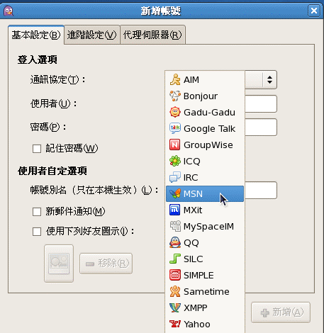

5.3 远程联机指令与实时通讯软件
啥是远程联机呢？其实就是在不同的计算机之间进行登入的情况啦！我们可以透过 telnet, ssh 或者是 ftp 等协议来进行远程主机的登入。底下我们就分别来介绍一下这些基本的指令吧！这里仅是谈到客户端功能喔， 相关的服务器我们则会在后续进行说明的。
5.3.1 终端机与 BBS 联机： telnet
telnet 是早期我们在个人计算机上面要链接到服务器工作时，最重要的一个软件了！他不但可以直接连接到服务器上头， 还可以用来连结 BBS 呢！非常棒！不过， telnet 本身的数据在传送的时候是使用明码 (原始的数据，没有加密) ， 所以数据在 Internet 上面跑的时候，会比较危险一点 (就怕被别人监听啊)。 更详细的资料我们会在第十一章远程联机服务器内做介绍的。
[root@www ~]# telnet [host|IP [port]]
# 范例一：连结到台湾相当热门的 PTT BBS 站 ptt.cc
[root@www ~]# yum install telnet <==默认没有安装这软件
[root@www ~]# telnet ptt.cc
欢迎来到 批踢踢实业坊 目前有【100118】名使用者与您一同对抗炎炎夏日。
请输入代号，或以 guest 参观，或以 new 注册:
[高手召集令] 台湾黑客年会 暑假与你骇翻南港 http://reg.hitcon.org/hit2011
要学计算机，首选台湾大学信息训练班! http://tinyurl.com/3z42apw
如上所示，我们可以透过 telnet 轻易的连结到 BBS 上面，而如果你的主机有开启 telnet 服务器服务的话，同样的利用『 telnet IP 』并且输入账号与密码之后，就能够登入主机了。 另外，在 Linux 上的 telnet 软件还提供了 Kerberos 的认证方式，有兴趣的话请自行参阅 man telnet 的说明。
除了连结到服务器以及连结到 BBS 站之外， telnet 还可以用来连结到某个 port (服务) 上头吶！ 举例来说，我们可以用 telnet 连接到 port 110 ，看看这个 port 是否有正确的启动呢？
# 范例二：侦测本机端的 110 这个 port 是否正确启动？
[root@www ~]# telnet localhost 110
Trying 127.0.0.1...
telnet: connect to address 127.0.0.1: Connection refused
# 如果出现这样的讯息，代表这个 port 没有启动或者是这个联机有问题，
# 因为你看到那个 refused 嘛！
[root@www ~]# telnet localhost 25
Trying ::1...
Connected to localhost.
Escape character is '^]'.
220 www.centos.vbird ESMTP Postfix
ehlo localhost
250-www.centos.vbird
250-PIPELINING
250-SIZE 10240000
....(中间省略)....
250 DSN
quit
221 2.0.0 Bye
Connection closed by foreign host.
瞧！根据输出的结果，我们就能够知道这个通讯协议 (port number 提供的通讯协议功能) 是否有成功的启动吶！ 而在每个 port 所监听的服务都有其特殊的指令，例如上述的 port 25 就是在本机接口所提供的电子邮件服务， 那个服务所支持的指令就如同上面使用的数据一样，但是其他的 port 就不见得支持这个『 ehlo 』的命令， 因为不同的 port 有不同的程序嘛！所以当然支持的命令就不同啰！
5.3.2 FTP 联机软件： ftp, lftp
现在的人们由于有高容量的 email 可以用，因此传送档案可以很轻松的透过 email 。不过 email 还是有单封信件容量限制， 如果想要一口气传送个几百 MB 的档案，恐怕还是得要透过 FTP 这个通讯协议才行啊！文字接口的 FTP 软件主要有 ftp, lftp 两个，图形接口的呢？在 CentOS 上面预设有 gftp 这个好用的东东。在这里我们仅介绍文字接口的两个指令而已。
- ftp
ftp 这个指令很简单，用在处理 FTP 服务器的下载数据啦。由于鸟哥所在的位置在昆山科大，因此这里使用昆山科大的 FTP 服务器为例：
[root@www ~]# ftp [host|IP] [port]
# 范例一：联机到昆山科大去看看
[root@www ~]# yum install ftp
[root@www ~]# ftp ftp.ksu.edu.tw
Connected to ftp.ksu.edu.tw (120.114.150.21).
220---------- Welcome to Pure-FTPd [privsep] ----------
220-You are user number 1 of 50 allowed.
220-Local time is now 16:25\. Server port: 21.
220-Only anonymous FTP is allowed here <==讯息要看啊！这个 FTP 仅支援匿名
220-IPv6 connections are also welcome on this server.
220 You will be disconnected after 5 minutes of inactivity.
Name (ftp.ksu.edu.tw:root): anonymous <==鸟哥这里用匿名登录！
230 Anonymous user logged in <==嗯！确实是匿名登录了！
Remote system type is UNIX.
Using binary mode to transfer files.
ftp> <==最终登入的结果看起来是这样！
ftp> help <==提供需要的指令说明，可以常参考！
ftp> dir <==显示远程服务器的目录内容 (文件名列表)
ftp> cd /pub <==变换目录到 /pub 当中
ftp> get filename <==下载单一档案，档名为 filename
ftp> mget filename* <==下载多个档案，可使用通配符 *
ftp> put filename <==上传 filename 这个档案到服务器上
ftp> delete file <==删除主机上的 file 这个档案
ftp> mkdir dir <==建立 dir 这个目录
ftp> lcd /home <==切换『本地端主机』的工作目录
ftp> passive <==启动或关闭 passive 模式
ftp> binary <==数据传输模式设定为 binary 格式
ftp> bye <==结束 ftp 软件的使用
FTP 其实算是一个很麻烦的协议，因为他使用两个 port 分别进行命令与数据的交流，详细的数据我们会在第二十一章的 FTP 服务器内详谈，这里我们先单纯的介绍一下如何使用 ftp 这个软件。首先我们当然是需要登入啰， 所以在上头的表格当中我们当然需要填入账号与密码了。不过由于昆山科大仅提供匿名登录，而匿名登录者的账号就是『 anonymous 』所以直接填写那个账号即可。如果是私人的 FTP 时，才需要提供一组完整的账号与密码啦！
登入 FTP 主机后，就能够使用 ftp 软件的功能进行上传与下载的动作，几个常用的 ftp 内指令如上表，不过，鸟哥建议你可以连到大学的 FTP 网站后，使用 help (或问号 ?) 来参考可用的指令，然后尝试下载以测试使用一下这个指令吧！这样以后没有浏览器的时候，你也可以到 ftp 下载了呢！不错吧！另外你要注意的是，离开 ftp 软件时，得要输入『 bye 』喔！不是『 exit 』啦！
如果由于某些理由，让你的 FTP 主机的 port 开在非正规的埠口时，那你就可以利用底下的方式来连接到该部主机喔！
[root@www ~]# ftp hostname 318
# 假设对方主机的 ftp 服务开启在 318 这个 port 啊！
- lftp (自动化脚本)
单纯使用 ftp 总是觉得很麻烦，有没有更快速的 ftp 用户软件呢？让我们可以使用类似网址列的方式来登入 FTP 服务器啊？有的，那就是 lftp 的功能了！ lftp 预设使用匿名登录 FTP 服务器，可以使用类似网址列的方式取得数据， 使用上比单纯的 ftp 要好用些。此外，由于可在指令列输入账号/密码，可以辅助进行程序脚本的设计喔！
[root@www ~]# lftp [-p port] [-u user[,pass]] [host|IP]
[root@www ~]# lftp -f filename
[root@www ~]# lftp -c "commands"
选项与参数：
-p ：后面可以直接接上远程 FTP 主机提供的 port
-u ：后面则是接上账号与密码，就能够连接上远程主机了
如果没有加账号密码， lftp 默认会使用 anonymous 尝试匿名登录
-f ：可以将指令写入脚本中，这样可以帮助进行 shell script 的自动处理喔！
-c ：后面直接加上所需要的指令。
# 范例一：利用 lftp 登入昆山科大的 FTP 服务器
[root@www ~]# yum install lftp
[root@www ~]# lftp ftp.ksu.edu.tw
lftp ftp.ksu.edu.tw:~>
# 瞧！一下子就登入了！很快乐吧！ ^_^！你同样可使用 help 去查阅相关内部指令
至于登入 FTP 主机后，一样可以使用『help』来显示出可以执行的指令，与 ftp 很类似啦！不过多了书签的功能，而且也非常的类似 bash 吶！很不错呦！除了这个好用的文字接口的 FTP 软件之外，事实上还有很多图形接口的好用软件呢！ 最常见的就是 gftp 了，非常的容易上手喔！ CentOS 本身就有提供 gftp 了，你可以拿出原版的光盘来安装，然后进入 X Window 后， 启动一个 shell ，输入『 gftp 』就能够发现他的好用啦！
如果你想要定时的去捉下昆山科大 FTP 网站下的 /pub/CentOS/RPM-GPG* 的档案时，那么那个脚本应该要怎么写呢？ 我们尝试来写写看吧！
# 使用档案配合 lftp 去处理时：
[root@www ~]# mkdir lftp; cd lftp
[root@www lftp]# vim lftp.ksu.sh
open ftp.ksu.edu.tw
cd /pub/CentOS/
mget -c -d RPM-GPG*
bye
[root@www lftp]# lftp -f lftp.ksu.sh
[root@www lftp]# ls
lftp.ksu.sh RPM-GPG-KEY-CentOS-3 RPM-GPG-KEY-CentOS-4 RPM-GPG-KEY-CentOS-6
RPM-GPG-KEY-beta RPM-GPG-KEY-centos4 RPM-GPG-KEY-CentOS-5
# 直接将要处理的动作加入 lftp 指令中
[root@www lftp]# vim lftp.ksu.sh
lftp -c "open ftp.ksu.edu.tw
cd /pub/CentOS/
mget -c -d RPM-GPG*
bye"
[root@www lftp]# sh lftp.ksu.sh
若为非匿名登录时，则可以使用『 open -u username,password hostname 』修改 lftp.ksu.sh 的第一行！ 如果再将这个脚本写入 crontab 当中，你就可以定时的以 FTP 进行上传/下载的功能啰！这就是文字指令的好处！
5.3.3 图形接口的实时通讯软件： pidgin (gaim 的延伸)
现在应该大家都知道什么是 MSN, 雅虎实时通以及其他的通讯软件吧？那么要连上这些服务器时，该怎么处理哪？很简单，在 X Window 底下使用 pidgin 就好了！简直简单到不行～请先进入 X Window 系统，然后经过『应用程序』--> 『因特网』-->『Pidgin 网络实时通』启动他即可 (请注意你必须已经安装了 pidgin 了，可用 yum install pidgin 处理)。
不过，伤脑筋的是，我们所安装的 basic server 类型的 CentOS 6.x 主要做为服务器之用，所以连图形接口也没有给我们。 所以，鸟哥又用另外一部主机安装成 Desktop 的模式，利用该部主机来测试 pidgin 这玩意儿的！因此， 底下的练习你也可以先略过，等到你安装另一部 Desktop linux 时再来玩玩！
 图 5.3-1、pidgin 的欢迎画面
图 5.3-1、pidgin 的欢迎画面
在上图中按下『新增』，然后你会看到如下的画面：
 图 5.3-2、pidgin 支持的实时通讯数据
很神奇的是， pidgin 支持的通讯有够多的！我们使用 MSN 来作个解释好了：
 图 5.3-3、设定 MSN 的账号示意图
图 5.3-3、设定 MSN 的账号示意图
如上图，在画面中输入你的账号与密码，如果是在公用的计算机上，千万不要按下『记住密码』项目喔！按下新增后， pidgin 预设就会尝试登入了！登入后的画面如下所示：
 图 5.3-4、使用 pidgin 的 MSN 方式进行连天啰
图 5.3-4、使用 pidgin 的 MSN 方式进行连天啰
如果想要注销了，那么就按下图 5.3-4 最右边那个窗口，将『启动』的那个方框勾选取消，你就直接注销啰！